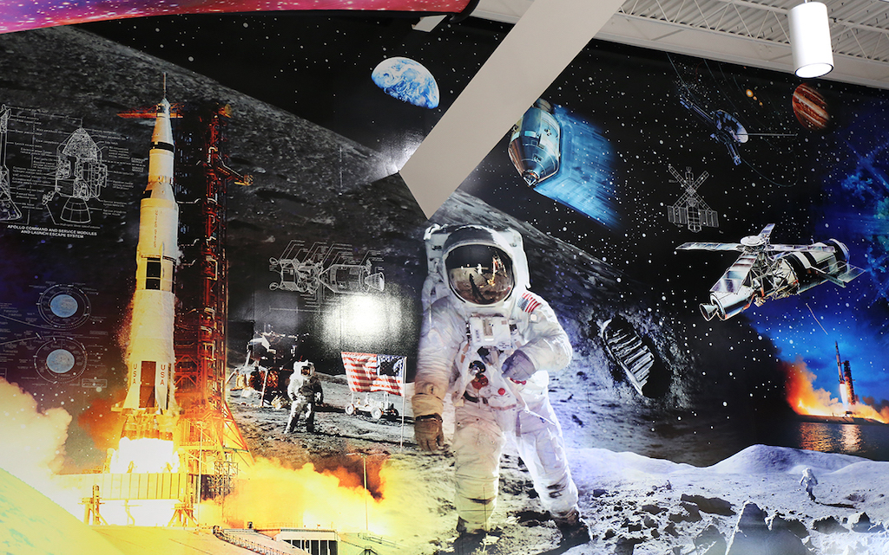

Historia de la exploración espacial
El Universo siempre ha fascinado a los seres humanos, que desde la Antigüedad soñaban con alcanzar mundos diferentes al suyo. Algunos escritores y cineastas del siglo XIX y principios del XX como Julio Verne y George Méliès abordaron el tema de la exploración espacial, pero no fue hasta mediados del siglo XX que este sueño se materializó.Los pioneros: padres de la Astronáutica
La exploración espacial es, tal como se puede inferir, la búsqueda por el espacio exterior, fuera del planeta Tierra, que induce al descubrimiento científico gracias al avance tecnológico. El aparato comúnmente asociado con esta actividad es el cohete espacial, que consiste en un cilindro abierto en uno de los extremos y relleno de un combustible. Sin embargo, los cohetes son solo una parte de las naves espaciales, y existen muchos otros sofisticados aparatos diseñados para la exploración espacial como las sondas, los satélites, los misiles, etcétera. Ahora bien, una nave espacial es todo vehículo especialmente diseñado para el vuelo en el espacio exterior, entendiendo este como el vacío existente entre los astros o cuerpos celestes.Uno de los pioneros fue un maestro de escuela llamado Konstantín Eduárdovich Tsiolkovski, que en la década de 1880 estudió profundamente los cohetes hasta el punto de convencerse de que eran los únicos artefactos con la capacidad de ingresar en el espacio. Sus trabajos teóricos sobre el mejor combustible para viajar, el cálculo de la velocidad final del cohete, entre otros, constituyeron un valioso aporte para la puesta en marcha de la exploración espacial. Se le considera el “Padre de la Cosmonáutica”. Por su parte, Robert H. Goddard, profesor de Física de la Universidad Clark, Estados Unidos, tiene el mérito de ser el primer hombre que construyó un cohete de combustible líquido, que fue probado exitosamente. El alemán Hermann Oberth fue también profesor y contribuyó con el diseño de cohetes, además de ser uno de los más apasionados divulgadores de la conquista espacial. El tiempo dio la razón a estos hombres de ciencia, y posteriormente, hombres notables como Sergei Korolev y Wernher von Braun se enfocarían en el diseño de cohetes y naves espaciales que, efectivamente, alcanzarían el espacio exterior.
La era de la exploración espacial
Se considera que este período inició el 4 de octubre de 1957, con la puesta en órbita del Sputnik I, el primer satélite artificial enviado al espacio. Este hecho propició una carrera por la conquista espacial entre Estados Unidos y la entonces Unión Soviética, ambas potencias vencedoras de la Segunda Guerra Mundial. Antes, los científicos alemanes habían realizado pruebas con el cohete alemán V-2, el primer cohete moderno cuya creación y desarrollo fueron dirigidos por Wernher von Braun como arma contra los aliados durante la guerra. Al terminar esta, Braun se trasladó a Estados Unidos, donde desarrolló más cohetes y tiempo después se convirtió en el hombre que dirigía los esfuerzos de astronáutica de los Estados Unidos. De parte de los soviéticos, la carrera espacial estuvo dirigida por Sergei Korolev. El Sputnik I fue el punto de cambio, el suceso que abrió un mundo de posibilidades más allá de los cielos. El 3 de noviembre de 1957, los soviéticos pusieron en órbita el Sputnik 2 que contenía el primer ser vivo en orbitar el planeta: la perrita Laika, que no sobrevivió a la travesía.Los primeros satélites artificiales norteamericanos tuvieron algunas complicaciones. Estados Unidos construyó el satélite Vanguard TV3, pero explotó apenas unos segundos después de su lanzamiento. No obstante, el 31 de enero de 1958 Estados Unidos puso en órbita el Explorer 1, que alcanzó una altura de 2,500 kilómetros sobre la superficie terrestre.
Los primeros seres vivos en sobrevivir al espacio fueron los perros Belka y Strelka, a bordo del Sputnik 5. Pero un nuevo hito se llevó a cabo el 12 de abril de 1961, cuando el cosmonauta soviético Yuri Gagarin se convirtió en el primer ser humano en sobrevivir a un viaje en el espacio a bordo del Vostok 1, en un viaje con una duración de 108 minutos. Este suceso sin igual transformó en celebridad y leyenda a Gagarin y abrió las puertas al inicio de los viajes tripulados por el hombre.
Por su parte, los estadounidenses enviaron al astronauta Alan Shepard al espacio, en un intento de no dejarse rezagar. Se trató de un vuelo suborbital de 15 minutos, a bordo del Mercury Redstone 3.
Después de varias pruebas y haber llegado tan lejos, estaba claro que la atmósfera terrestre no iba a ser el límite, y tanto Estados Unidos como la Unión Soviética comenzaron a concentrarse en llegar a la luna, el satélite terrestre. El 25 de mayo de 1961, el presidente de Estados Unidos, John Kennedy, anunció que los astronautas americanos pisarían la luna antes del año 1970.
En tanto eso no pasaba, los soviéticos seguían avanzando en la carrera. En 1965, el cosmonauta Alexei Leonov pasó a la historia como el primer hombre en “caminar” en el espacio. Leonov salió de su cápsula durante unos 12 minutos aunque bien sujeto a su nave. Con respecto a los estadounidenses, el 21 de diciembre de 1968 fue lanzada la misión Apolo 8, la segunda tripulada del Programa Apolo y la primera de todas en llegar a la órbita de la luna y regresar a la Tierra.
El evento que marcó un antes y un después en la exploración espacial tuvo como fecha el 20 de julio de 1969. Aquel celebérrimo día, el módulo lunar de la misión Apolo 11 se posó sobre la superficie de la luna, y los astronautas Neil Armstrong y Edwin E. Aldrin Jr. se convirtieron en los primeros hombres en caminar sobre el satélite de la Tierra, siendo Aldrin posterior a Armstrong. Las palabras de este, “un pequeño paso para el hombre, un gran paso para la humanidad” tendrían proyección a nivel mundial.
La exploración de la luna continuaría con pequeñas misiones posteriores. En 1970, el robot automático soviético Lunokhod 1 llegó a la luna, dos meses después de la nave Luna 16. En 1972, Eugene Cernan y Harrison Schmitt fueron los últimos astronautas en caminar sobre el satélite.
Durante los siguientes años se produjeron múltiples avances en los viajes y la investigación del espacio, gracias a la tecnología y al conocimiento cada vez más amplios y mejores. Por ejemplo, en 1973 Estados Unidos lanzó su primera estación espacial (Sylab) y en 1975 las naves Apolo (estadounidense) y Soyuz (soviética) se unieron en y, en un acto llamativo, los astronautas de ambas naves se dieron la mano y pasaron un par de días juntos.
Cuatro años más tarde la exploración de otros planetas del Sistema Solar ya rendía frutos. Las sondas Voyager 1 y 2 transmitieron imágenes de Júpiter y sus lunas, y en 1981 Voyager 2 llegó a Saturno. El primer transbordador espacial, Columbia, fue lanzado ese mismo año. El 7 de febrero de 1984, Bruce McCandless se convirtió en el primer astronauta en salir al espacio sin estar atado a su nave.
La década de 1990 vio un gran número de imágenes de otros planetas, estrellas y galaxias. El reto ya no consistía en enviar hombres al espacio, sino en lograr más avances durante más tiempo fuera de la Tierra. El primer turista en el espacio fue Dennis Tito, previo pago de una fuerte suma a un programa espacial ruso.
En el siglo XXI, los científicos tienen la mirada en Marte y en la posibilidad de colonizar otros planetas. Apenas en 2012 la sonda Voyager 1 entro en el espacio interestelar, y el rover Curiosity de la NASA se posó sobre Marte para explorar el planeta. -- [Fuente: GeoEnciclopedia]
